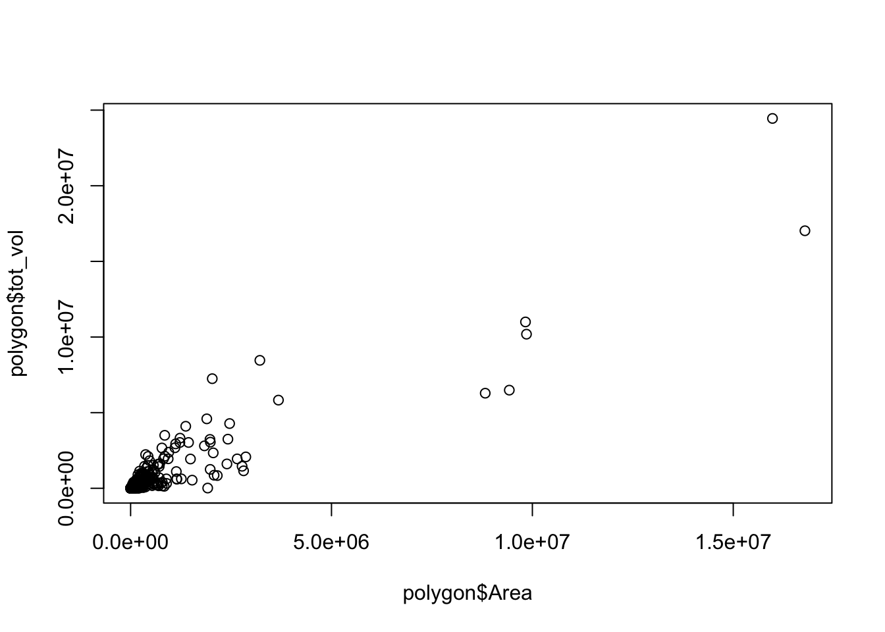
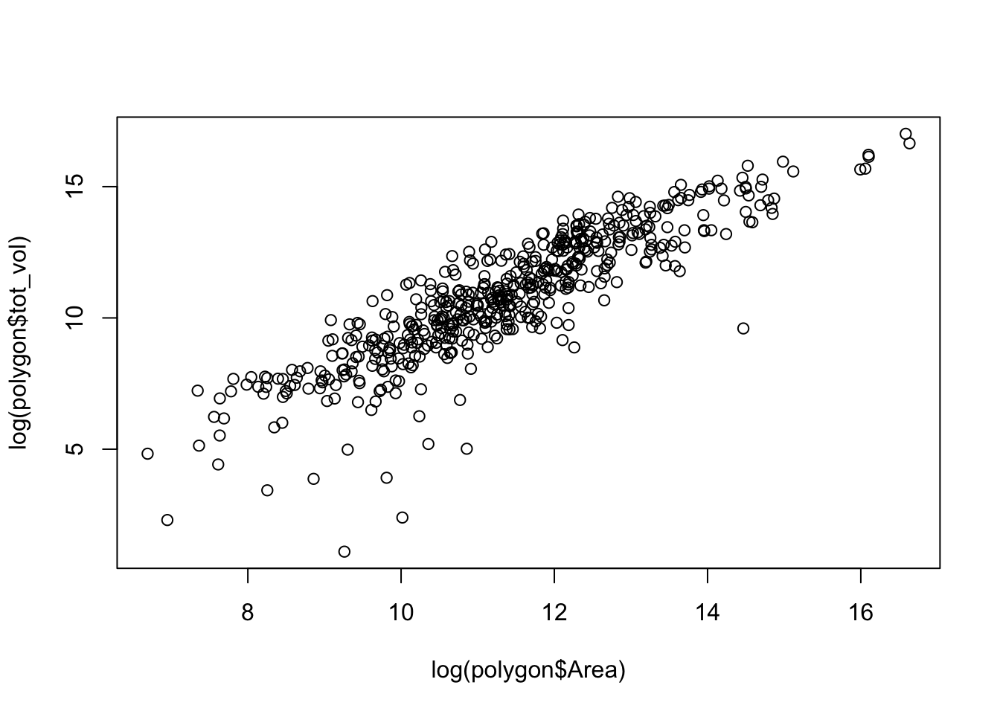
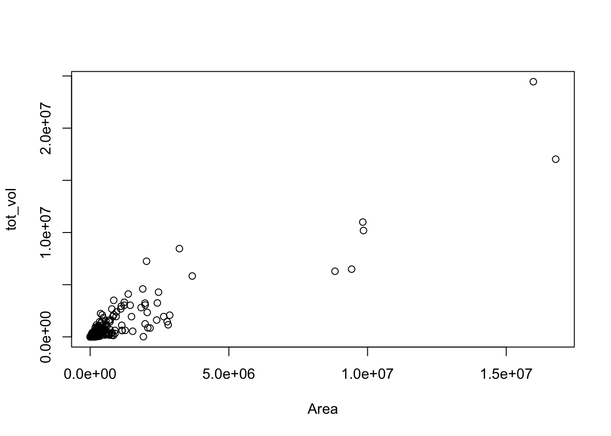
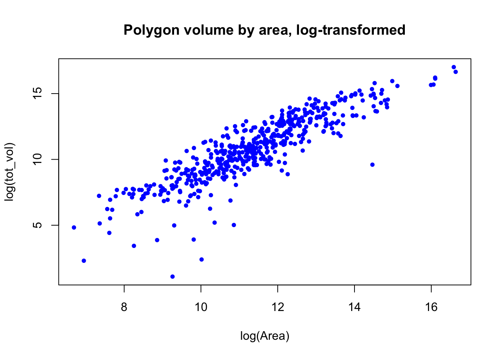

Making graphics with base R is annoying for many reasons, but a big one is having to type the name of the data frame over and over again to reference different columns.
Context
Back to our Mississippi River fish data. I’ve aggregated my sampling points into polygons, and now I want to explore some of their characteristics. To do that, I’d like to make some tables and plots, and because these are just quick, exploratory plots, I don’t feel like dealing with ggplot.
Load in the data (accessible on GitHub).
# Load data from GitHubpolygon <-read.csv("https://tinyurl.com/rta6hkbo") # Look at what we're dealing withdim(polygon) # How big is the data set?
First, I’d like to see how total volume tot_vol of the aquatic area scales with its Area.
In base R:
# Formula notationplot(polygon$tot_vol ~ polygon$Area)# OR: # Comma notationplot(polygon$Area, polygon$tot_vol)
Either way, we get this:

Or a more informative plot, with both variables on a log scale:
plot(log(polygon$tot_vol) ~log(polygon$Area))

This isn’t too too clunky, but if the data frame name or column names are long, it can get a little annoying.
Solution
The with() function allows you to specify the data frame your variables are coming from and then reference the variables with respect to the data frame, similar to the ggplot argument data =. Handy.
# Plot using the with() function with(polygon, plot(tot_vol ~ Area))

You can add any other arguments inside of the function, as normal, it’s just now wrapped in with().
# Log-transform variables and make the points blue dots, because why not?with(polygon, plot(log(tot_vol) ~log(Area), # log-transform pch =20, # dots instead of circles col ="blue", # make the dots blue main ="Polygon volume by area, log-transformed") # title )

It’s worth noting that this works for other functions besides plot(), too. Here’s an example with table(): let’s look at how many sampling polygons include revetment, broken down by navigation pool (area of the river). The data set contains three navigation pools: 4, 8, and 13.
# Two-way table by pool and revetmentwith(polygon, table(revetment, pool))
pool
revetment 4 8 13
0 71 199 103
1 57 53 44
Outcome
Quick plots and data manipulation made even quicker!
Resources
Discussion of when to use with(): https://stackoverflow.com/questions/42283479/when-to-use-with-function-and-why-is-it-good
Citation
BibTeX citation:
@online{gahm2018,
author = {Gahm, Kaija},
title = {With()},
date = {2018-07-20},
url = {https://kaijagahm.github.io/posts/2018-07-20-with},
langid = {en}
}
![]()